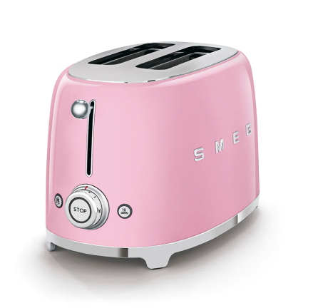

The Smeg Toaster combines ergonomics, functionality, and aesthetic balance. Breakfast, Lunch, Brunch, or Snacks when you fall in love with the SMEG 50’s style toaster, you’ll find every available excuse to use it.
Check out the various images of the Smeg Toaster in your everyday routine featuring in our photo gallery!
The Smeg Toaster is one of the fine product lines that is created to be efficient in everyday use and also appealing for the user experience.
Allows you to heat up cold or frozen bread when activated, it brings it back to life!
Will toast one side of any kind of bread, without toasting the other side.
Up to 6 browning levels through a quick cooking time and a stop button to withdraw the heating process.
View the many collaborations that Smeg has done with various companies like Disney, Dolce & Gabbana, and etc.
Check the feedback of customers who have purchased the Smeg experience.
I love how pastel pink suits the design of the toaster. I had the SMEG toaster for a week and the bread I make always comes out crispy. Such a great toaster!